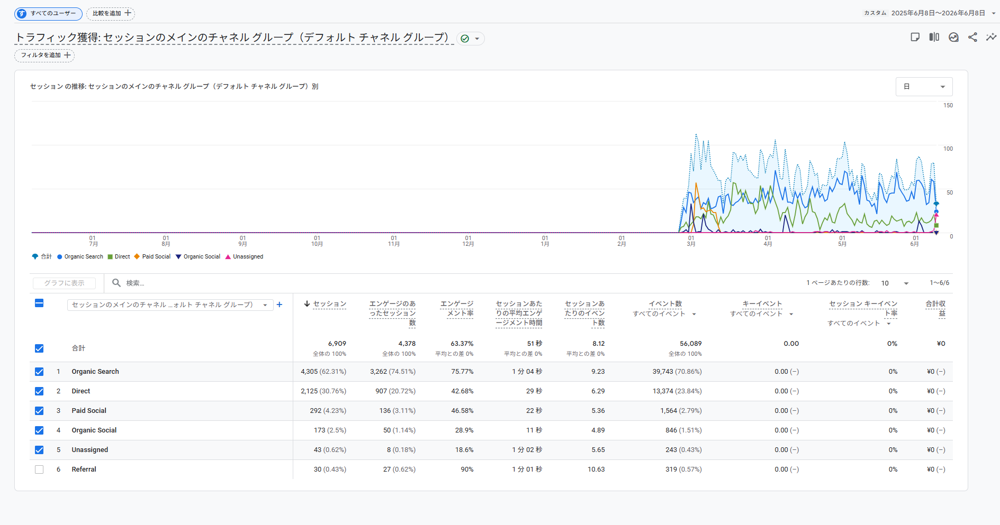
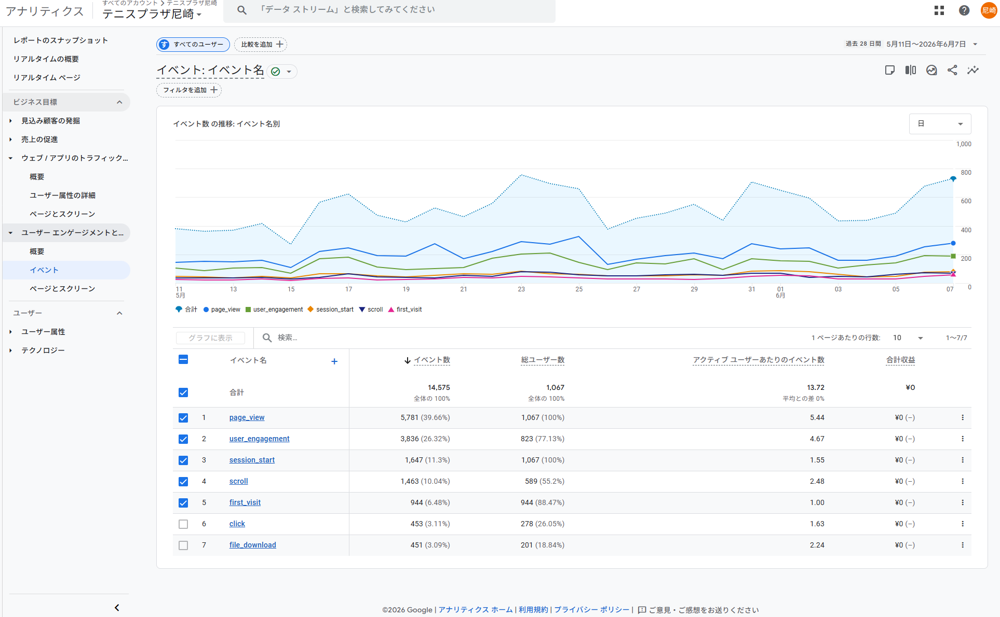
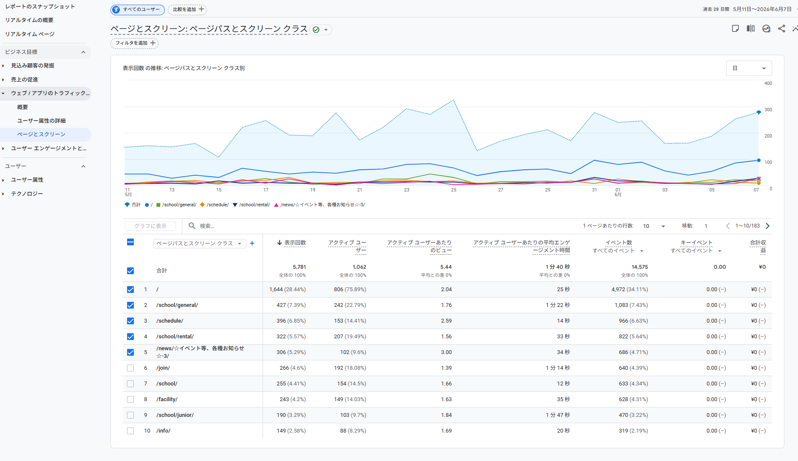
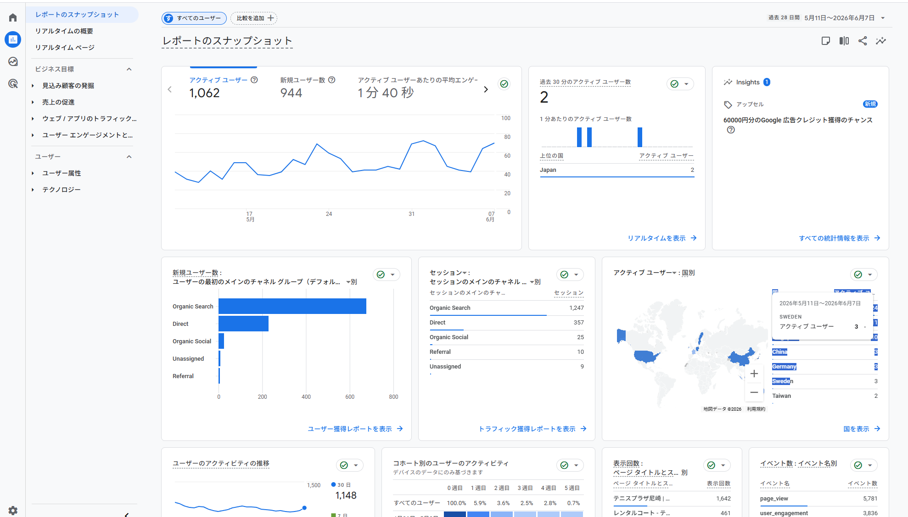
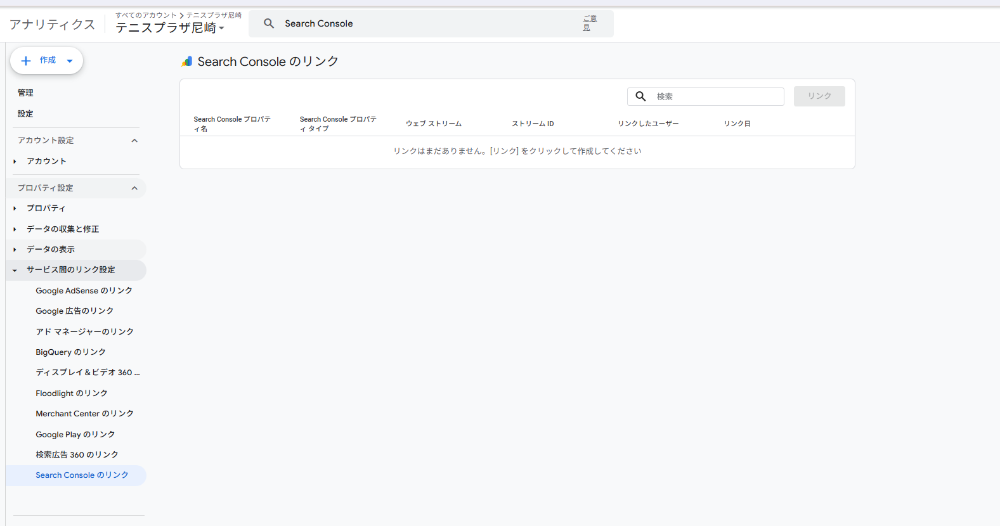
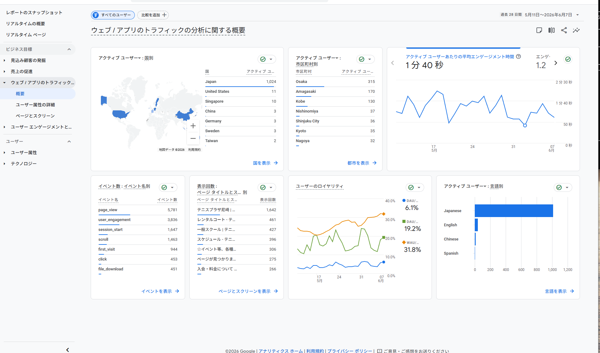
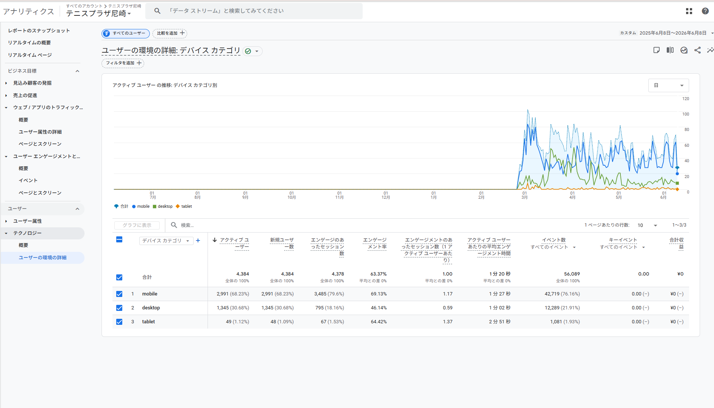
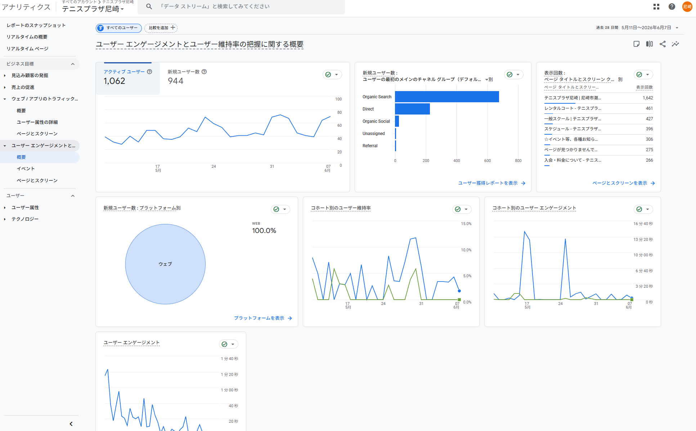
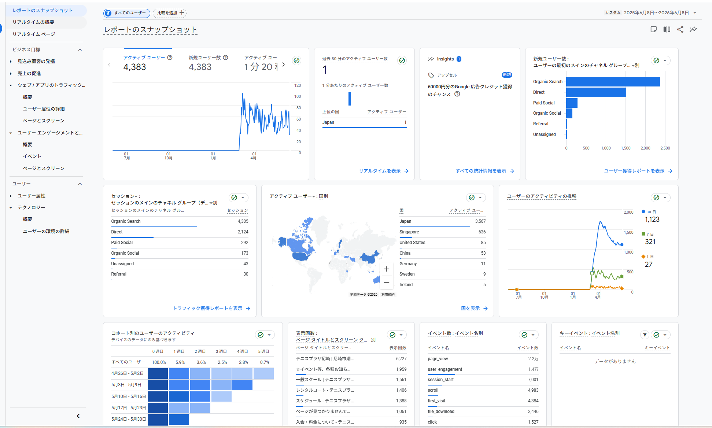
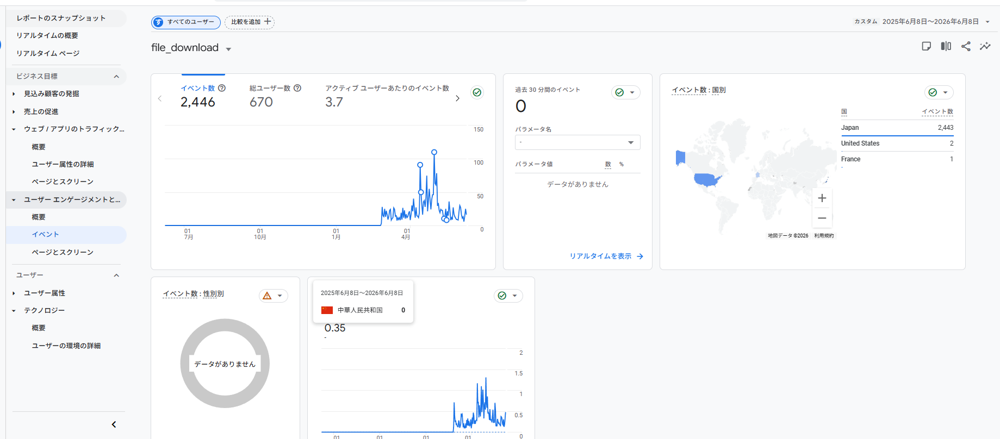

💬 この資料の読み方
難しい言葉が出てきますが、すぐ下に「やさしい意味」を並べたミニ辞典を置いています。各章の最初にも「ひとことで言うと」で要点をかみ砕いています。専門用語には文中でも（カッコ書き）で補足を付けているので、知識ゼロでもそのまま読めます。
📖 用語ミニ辞典 ― この資料に出てくる言葉
| セッション | サイトへの「訪問」1回ぶん。お店に1回入ってきたイメージ。 |
| ユーザー／アクティブユーザー | 訪れた「人」の数。 |
| 新規ユーザー | 初めて来た人。 |
| チャネル channel | 「どこから来たか」の入口の種類。下の5つが代表。 |
| └ Organic Search オーガニック検索 | Googleなどで検索して、広告ではない普通の検索結果をクリックして来た訪問。 |
| └ Direct ダイレクト | URL直接入力・ブックマーク・QRなど、入口が特定できない直接の来訪。既存会員のスケジュール確認などが多い。 |
| └ Organic Social オーガニックソーシャル | Instagram等のSNS投稿から、広告ではなく自然に来た訪問。＝普段の投稿を見て来てくれた人。 |
| └ Paid Social ペイドソーシャル | SNSに出した「お金を払う広告」から来た訪問。誰かが広告費を出している印。 |
| └ Referral リファラル | 他サイトに貼られたリンクから来た訪問。 |
| エンゲージメント率 ER | 来た人のうち「ちゃんと見てくれた人」の割合（すぐ帰らなかった率）。高いほど良い。 |
| 平均エンゲージメント時間／滞在 | 実際にページを見ていた時間。短い＝すぐ離脱。 |
| キーイベント／コンバージョン(CV) | 「成果」。予約・問い合わせ・申込など、お店のゴールになる行動。これを設定して初めて成果が数えられる。 |
| リテンション／維持率 | 一度来た人が、また戻ってくる割合。低い＝1回きりで終わる。 |
| 404エラー | 「ページが見つかりません」の表示。リンク切れ。 |
| Search Console サーチコンソール | 「Google検索でどんな言葉で表示・クリックされたか」を見る無料ツール。GA4は「来てから」、こちらは「検索の時点」を見る。 |
| utm ユーティーエム | リンクに付ける目印タグ。「どの投稿／広告から来たか」を見分けるための仕掛け。 |
| ボット bot | 人間ではなくプログラムの自動アクセス。数字のノイズになる。 |
| 指名検索／一般検索 | 「テニスプラザ尼崎」と名前で探す人／「尼崎 テニス」と一般的な言葉で探す人（＝新規開拓）。 |
結論サマリー ― 実データで分かったこと
💬 ひとことで言うと
テニプラHPは「人はそこそこ来ている（月およそ1,062人）のに、①成果を測る計器が付いていない＝予約や問い合わせが何件来たか分からない、②一番強い武器であるSNSがHPに繋がっていない」状態。水道にたとえると、勢いのいい蛇口（SNS・検索）はあるのに、水を受けるバケツ（HP側の受け皿）に穴が空いているイメージです。お金をかけなくても、計器を付けて導線を繋ぐだけで成果が見え始めます。
致命的 ① 成果(CV)の計測がゼロ
予約・問い合わせ・電話・入会の「成果」が1件も記録されていない（全183ページでゼロ）。何が効いたか分からない状態。
致命的 ② SNS→HPが月25訪問（全体の1.5%）
フォロワー893・最大18.5万回再生のリールがあるのに、その勢いがHPにほぼ流れていない。
致命的 ③ SNS広告にお金が出ているのに無駄打ち
有料のSNS広告が動いている（12か月で292訪問）のに、滞在22秒・成果計測ゼロで効果が全く不明。
重大 ④ 検索の中身を見る設定が未接続
「どんな言葉で検索されているか」を見るツール(Search Console)がGA4と繋がっておらず、誰も見ていない。
重大 ⑤ リンク切れ(404)が月275回
「ページが見つかりません」が毎月275回。来てくれた人を取りこぼしている。
重大 ⑥ 来訪の6〜7割が検索1本に偏り
検索からの流入頼み。しかも「名前で探す既存客」か「新規開拓」かが（④未設定のため）分からない。
重大 ⑦ 記録は2026年3月から
1年を選んでも実質3か月半ぶんしかデータがない＝これまで数字で振り返れていなかった。
重大 ⑧ SNSから来た人は11〜22秒で即離脱
受け皿のページが用意されていない証拠。蛇口より先にバケツの穴をふさぐべき。
色の意味：致命的 施策以前の土台が欠けている 重大 早く直すと効果が大きい 良い兆し 活かせる資産
1. 流入構造 ― どこから来ているか
💬 ひとことで言うと
訪問の入口を分けて見ると、大半が「検索」から。SNS（普段の投稿）からはほとんど来ておらず、しかもSNSから来た人はすぐ帰ってしまう。＝SNSの受け皿が用意できていません。

証跡① GA4「トラフィック獲得（どこから来たか・質つき）」直近12か月
訪問数（12か月）：Organic Search＝検索からの自然流入 4,305（62.3%／よく見た率75.8%・滞在1分04秒）｜Direct＝直接 2,125（30.8%／42.7%・29秒）｜Paid Social＝SNS広告 292（4.2%／46.6%・22秒）｜Organic Social＝SNS自然流入 173（2.5%／28.9%・11秒）｜Referral＝他サイト経由 30｜合計 6,909。「成果(CV)」はどの入口も0件。
良い兆し：検索からの流入は質が良い検索で来た人は「よく見た率」75.8%・滞在1分04秒と、しっかり読んでくれている。＝検索対策（記事づくり等）が効く土壌がある。
🔴 指摘：SNSから来た人はすぐ帰るSNS自然流入の滞在はわずか11秒（全入口で最低）、SNS広告も22秒。＝SNSから来た人が着地するページ（受け皿）が用意されていない。
💡 こうする（提案）SNSの露出を増やす前に、SNSから来た人の着地ページを整える。具体的には、体験予約・LINEへの行き先（ボタン）をスマホ最優先で作り、リンクに目印タグ（utm）を付けて「どの投稿から来たか」を見えるようにする。
2. 【致命的】成果(CV)の計測がゼロ
💬 ひとことで言うと
「予約された」「問い合わせが来た」「電話がかかった」といった“成果”を1件も数えていません。＝今は、どの施策がお客さんを連れてきたのか誰も判断できない状態。レジのないお店で「今日いくら売れた？」が分からないのと同じです。

証跡② GA4「記録されている行動の一覧」― 自動で取れる7種だけ（成果は未設定）

証跡③ GA4「ページ別」― 右端「キーイベント(=成果)」が全ページ 0.00
記録されているのは「ページが見られた」「スクロールした」などの自動で取れる7種だけ。体験予約・問い合わせ・電話タップ・入会申込といった“成果”が1つも設定されていない。12か月の成果レポートも「データがありません」。
🔴 指摘：成果を1件も測れていない（施策以前の問題）どの入口が予約や問い合わせに繋がったか判断できず、改善も、費用対効果の説明（社内承認）もできない。MEO業者（月5,000円）が付いていてもこの状態。
💡 こうする（提案・最優先・お金ほぼ不要）次の行動を「成果(CV)」として設定する：①体験予約完了 ②問い合わせ送信 ③電話番号タップ ④入会フォーム到達 ⑤LINE登録クリック ⑥資料ダウンロード。これだけで「何件成果が出たか」が見える状態になります（＝レジを付けるイメージ）。
3. 【致命的】SNSがHPに繋がっていない ＆ 広告の無駄打ち
💬 ひとことで言うと
Instagramのフォロワー893人・最大18.5万回再生のリールという強い武器があるのに、その勢いがHPに月25回しか流れていません。さらに誰かがSNS広告にお金を払っているのに、来た人は22秒で帰る＝お金がムダになっています。

証跡④ GA4「全体サマリー」直近28日 ― SNS自然流入(Organic Social)はわずか25
28日の訪問：検索 1,247｜直接 357｜SNS自然流入 25（全体の1.5%）｜他サイト経由 10。
12か月ではSNS広告(Paid Social) 292が動いている＝誰かが既にSNS広告にお金を払っている（証跡①）。
🔴 指摘①：一番強い武器がHPに繋がっていないフォロワー893・最大18.5万再生の到達が、HPに月25回しか流れていない。Instagramのプロフィール欄に行き先（HP/予約/LINEへのリンク）が無い、または機能していない疑いが濃い。
🔴 指摘②：広告費が無駄打ちSNS広告にお金が出ているのに、来た人は滞在22秒＋成果計測ゼロ。誰が・いくらで回しているか（MEO業者？別？近江さん？）をMTGで要確認。効果が全く不明。
💡 こうする（提案）①Instagramのプロフィール欄の行き先を、予約LP／LINEに集約 ②投稿・リールの締めを「プロフィールから予約」に統一 ③目印タグ(utm)で流入を可視化 ④今ムダになっている広告費を、計測付きの運用に振り替える（払っているお金を成果につなぐ）。
4. 【重大】検索の中身を見る設定(Search Console)が未接続
💬 ひとことで言うと
「お客さんがどんな言葉で検索して来たか」を見る無料ツール（Search Console）が、GA4と繋がっていません。＝検索が一番の入口なのに、その中身を誰も見ていない状態です。

証跡⑤ GA4 設定画面「Search Consoleのリンク」― 「リンクはまだありません」
GA4 と Search Console（検索の言葉・掲載順位を見るツール）が未接続。どんな検索語で表示・クリックされたかをGA4側で一切見られない。
🔴 指摘：計測の土台が二重に欠けている成果(CV)が測れない（第2章）うえに、検索の中身も見られない。流入の6〜7割を占める検索が、「名前で探す既存客（指名検索）」なのか「新規開拓（一般検索）」なのかすら分からない。
💡 こうする（提案）Search Consoleを接続（成果計測と並ぶ最優先・お金不要）。接続後、「尼崎 テニス」など新規開拓の言葉で取れているかを確認し、弱ければ地域に強い記事づくりで開拓する。※まずSearch Console自体が登録済みかを確認。未登録なら登録から。
5. ページ別の見られ方と リンク切れ(404)
💬 ひとことで言うと
ジュニア・一般スクール・入会のページはじっくり読まれている＝興味が濃い人がいる。でもそこに「予約・相談ボタン」が弱く、もったいない。さらにリンク切れ(404)が月275回も起きています。

証跡⑥ GA4「概要」直近28日（人気ページ・地域・言語・行動）
| ページ | 表示(28日) | 滞在時間 | 読み取り |
|---|
| /（トップ） | 1,644 | 25秒 | 入口だが滞在は浅い |
| ジュニアスクール | 190 | 1分47秒 | 親がじっくり検討 |
| 一般スクール | 427 | 1分22秒 | 検討が濃い・滞在長い |
| 入会 | 266 | 1分14秒 | 入りたい意欲層 |
| レンタルコート | 322 | 33秒 | 需要あり（2番目に人気） |
| ページが見つかりません(404) | 275 | — | リンク切れが多発 |
🔴 指摘①：興味の濃いページに予約ボタンが無いジュニア(1分47秒)・一般(1分22秒)・入会(1分14秒)はしっかり読まれているのに、体験予約やLINEへの導線が弱く、取りこぼしている。
🔴 指摘②：リンク切れ(404)が月275回（年1,061回）古いリンク・URL変更などで、来てくれた人をエラーページに飛ばして失っている。検索の評価も下がる。
💡 こうする（提案）①よく読まれるページ（特にジュニア＝親の「安心・送迎」訴求）に予約・相談ボタンを集中配置 ②レンタル利用者をスクール体験へ案内 ③リンク切れの発生元を特定して正しいページへ転送(リダイレクト)。
6. 来ている人の特徴 ― スマホ中心・地域
💬 ひとことで言うと
訪問の7割近くがスマホ＝ページもボタンも「スマホで見やすい・押しやすい」が最優先。地域は大阪・尼崎・神戸が中心で、西宮はまだごくわずか（＝伸びしろ）。一度来た人がまた来る率は低めです。

証跡⑦ GA4「使われている端末」直近12か月
スマホ(mobile) 68.2%（よく見た率69.1%）｜パソコン(desktop) 30.7%（46.1%）｜タブレット 1.1%。スマホの人ほどよく見ている。
読み取り：完全にスマホ中心スマホの人がよく動く。パソコンは情報確認（会員・事務）で短時間。

証跡⑧ GA4「来訪者と再訪の概要」直近28日（地域・リピート率など）
地域（市区町村・28日）：Osaka 315 ＞ Amagasaki 170 ＞ Kobe 130 ＞ Nishinomiya（西宮）37。初めての人の割合88.9%、再訪率は1週間後5.9%→5週間後0.7%。
※12か月の国別でSingapore 636が突出＝ボット（自動アクセス）のノイズの疑い。数字は海外を除いて読むのが正解。
🔴 指摘：西宮はまだ薄い／一度きりが多い商圏は大阪・神戸まで広いが西宮はわずか37＝西宮再建フェーズの伸びしろ。ほとんどが初訪問でリピートが弱い（用事を済ませて帰る情報サイト型）。
💡 こうする（提案）①ページ・ボタンはスマホ最優先で設計 ②LINE登録で「来訪→継続的なつながり」を作り、再訪に頼らない関係を持つ ③西宮はほぼ認知ゼロからの出発＝横展開の余地として位置づける。
7. 【重大】データの記録は2026年3月から
💬 ひとことで言うと
「1年分」を選んでも、実際にデータがあるのは3月ごろから＝約3か月半ぶんだけ。つまり今まで誰も数字で振り返れていませんでした（記録の仕組みが最近まで無かった）。

証跡⑨ GA4「全体サマリー」直近12か月 ― グラフが3月に急に立ち上がる
訪問者の推移が2026年2〜3月から急に立ち上がり、それ以前はほぼゼロ。＝GA4の導入が最近（2〜3月ごろ）の可能性が高い。
🔴 指摘：1年分の比較ができない季節ごとの増減や去年との比較が今はできない。これまで判断材料となる数字が無かったということ。
💡 こうする（提案）「正しく記録して積み上げる」こと自体に価値がある。成果計測＋Search Console接続＋月次レポートで、今後は数字で判断できる状態にする。
8. 隠れた重要行動（資料ダウンロード）
💬 ひとことで言うと
申込書や料金表らしき資料のダウンロードが12か月で2,446回も起きている＝興味の強い行動。でも「何のファイルか」を記録していないので活かせていません。

証跡⑩ GA4「ファイルのダウンロード」詳細 直近12か月
資料DL：12か月 2,446回 / 670人（＝見込みの高い行動）。だがファイル名が記録されておらず「データがありません」＝何が落とされたか見られない。
🔴 指摘：見込み客のサインを取りこぼし申込書・料金表・スケジュール等のDLが月およそ200回あるのに中身が分からず、成果にも繋がっていない。記録設定が浅い証拠。
💡 こうする（提案）ファイル名を記録する設定を入れ、ダウンロード＝「見込み客のサイン」として成果(CV)に数え、LINE登録などへ案内する。電話タップらしき行動(クリック)も同様に中身を分解する。
9. まとめ：問題 → どうするか 一覧
| テーマ | 今の状態（証跡） | どうするか（優先度） |
|---|
| 成果の計測 | 成果(CV)が全部0件（証跡②③） | 成果の計測を設定（★最優先・お金ほぼ不要） |
| 検索の可視化 | Search Console未接続（証跡⑤） | 接続して検索語を分析（★最優先・お金不要） |
| SNS導線 | SNS流入25/月・滞在11秒（証跡①④） | プロフィール行き先を集約＋目印タグ＋ボタン統一（★高） |
| SNS広告 | 広告292・22秒・効果不明（証跡①） | 出稿主を確認→計測付き運用へ振替（高） |
| リンク切れ | 404が年1,061回（証跡⑥） | 発生元を特定して正しいページへ転送（高） |
| 入会導線 | 濃いページに予約ボタンが弱い（証跡⑥） | 予約・相談ボタンを集中配置＋成果計測（高） |
| 端末 | スマホ68%（証跡⑦） | スマホ最優先でページ設計（中） |
| 隠れ成果 | 資料DL 2,446回・中身不明（証跡⑩） | ファイル名を記録→成果に数える（中） |
| 商圏 | 西宮わずか37（証跡⑧） | 西宮展開フェーズの根拠（参考） |
最初の一手（まず受け皿＝バケツの穴をふさぐ・お金ほぼ不要）
① 成果(CV)の計測を設定 ② Search Consoleを接続 ③ SNS→HPの行き先を整える（プロフィール＋目印タグ）。
この3つは大きな出費なしで「成果が見える・検索が見える・SNSが繋がる」状態を作ります。ここを整えてから、SNS露出・記事・広告という蛇口を太くするのが正しい順番です。